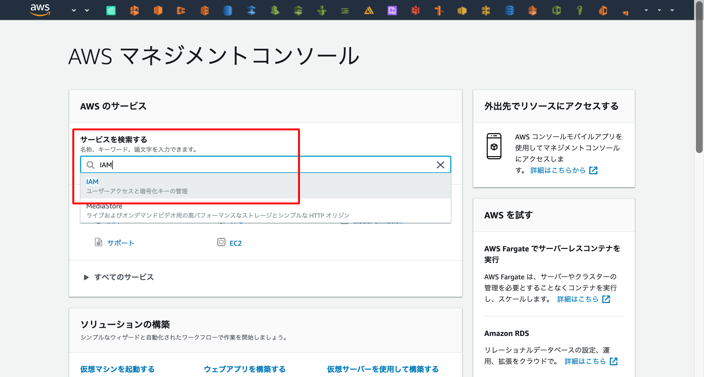
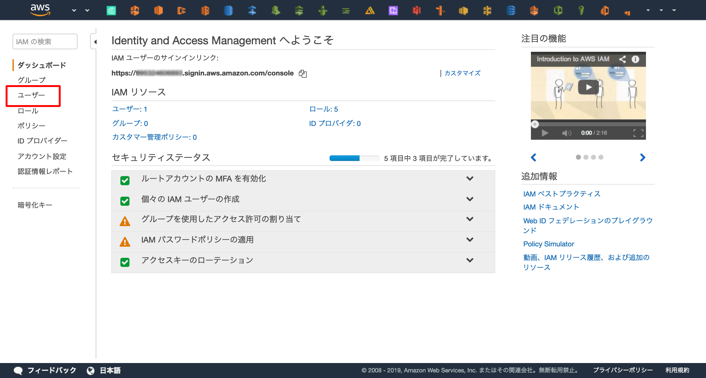
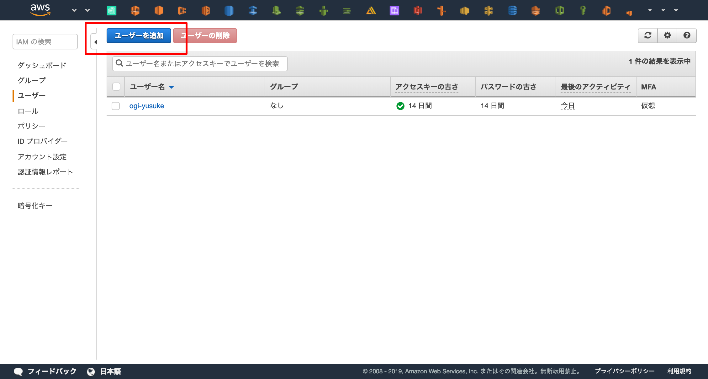
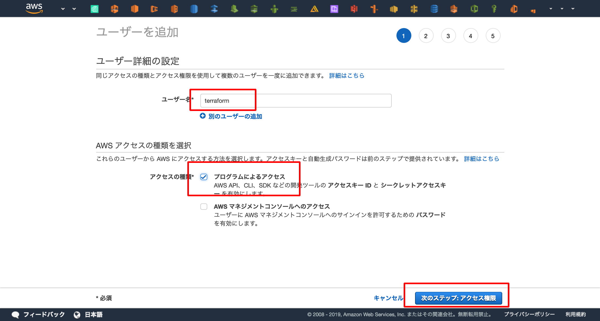
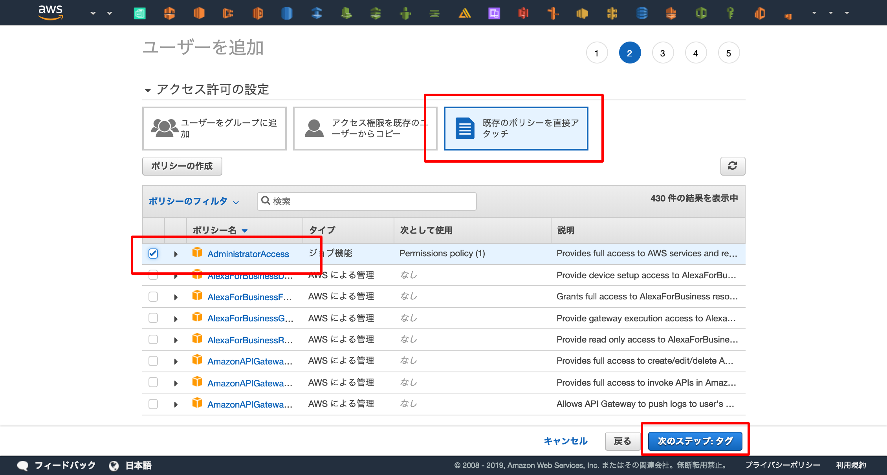
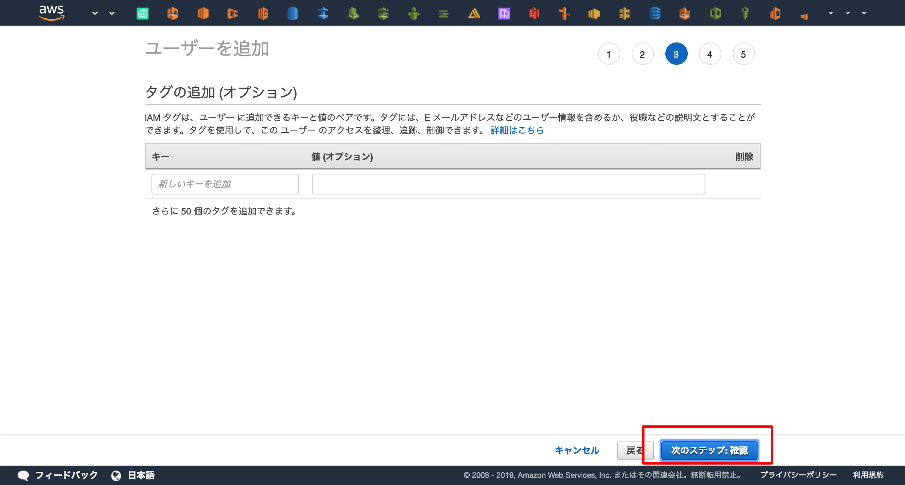
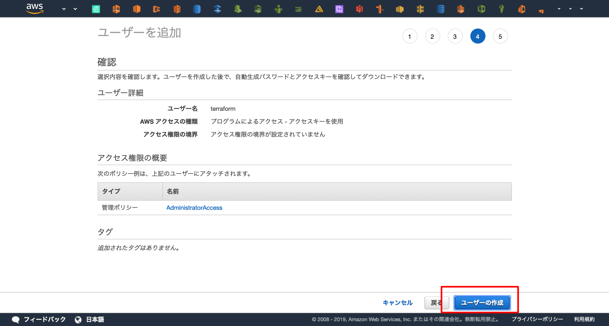
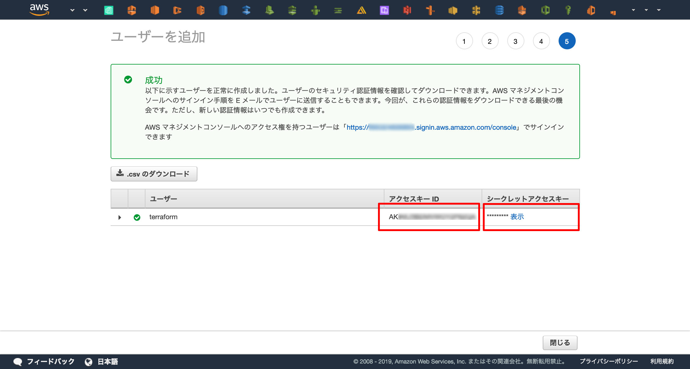

コマンドの用意
terraform コマンドをDockerで用意します。
IAMユーザーの作成¶
まずはAWSのWebコンソールへアクセスしてTerraform実行用のIAMユーザーを作成し、アクセスキーを取得します。
手順¶
AWS WebコンソールからIAMサービスへアクセス

IAMサービスのトップページからユーザー一覧へアクセス。

「ユーザーを追加」を選択し、IAMユーザーの作成開始。

ユーザー名を「terraform」に設定し、「プログラムによるアクセス」を有効化。
「次のステップ:アクセス権限」を押下。

「既存のポリシーを直接アタッチ」を選択し、「AdministratorAccess」ポリシー(管理者権限)を選択。
「次のステップ:タグ」を押下。

タグは入力せず、そのまま「次のステップ:確認」を押下。

「ユーザーの作成」を押下し、IAMユーザーの作成が完了。

アクセスキーを取得できるので、他人にもれないように控える。

シークレットキーをgitへ上げないための保険
commitの内容をスキャンし、AWSアクセスキーが含まれていたらそのcommitをリジェクトしてくれるツールです。
保険のためにもAWSを扱うリポジトリでは有効化しておくと良いでしょう。
awslabs/git-secrets: Prevents you from committing secrets and credentials into git repositories
terraformをDockerで起動¶
Dockerの1つのユースケースとして「コマンドのラップ」があります。
ここではDockerに慣れ親しむためにもDockerでTerraformを起動してみます。
まずはディレクトリの作成をしてチェックアウトします (Desktopへ"terraform"というディレクトリを作成していますが、適宜修正してください)。
$ mkdir ~/Desktop/terraform $ cd ~/Desktop/terraform
次に、TerraformをDockerで起動します。
その際に先程取得したIAMユーザーのアクセス情報を渡すことでTerraformがAWSのAPIへアクセスできるようになります。
また、ホストのカレントディレクトリをコンテナ上へマウント( -v $(pwd):/templates )してファイルの共有を行います。
$ docker run \
-e AWS_ACCESS_KEY_ID=<AWS ACCESS KEY> \
-e AWS_SECRET_ACCESS_KEY=<AWS SECRET ACCESS KEY> \
-v $(pwd):/templates \
-w /templates \
-it \
--entrypoint=ash \
hashicorp/terraform:0.11.12
これでTerraformの実行環境が手に入りました
基本的なコマンド¶
実際にコードを書く前にどんなコマンドがあるか見ておきましょう。
Terraformは基本的以下の4つのコマンドで操作します。
$ terraform init¶
初期化。
コードが依存するプラグインやModuleをダウンロードします。
composer install や npm install のようなイメージが近いです。
$ terraform plan¶
dry-run。
コードとAWSの環境を比較して、プロビジョニング結果を予測してくれます。
ただし、例外的なケース(AWSのリソース上限など)はplanからは予測できません。
$ terraform apply¶
プロビジョニング。
記述したコードを実際の環境に適用します。
$ terraform destroy¶
削除。
管理しているリソースを全て削除します。